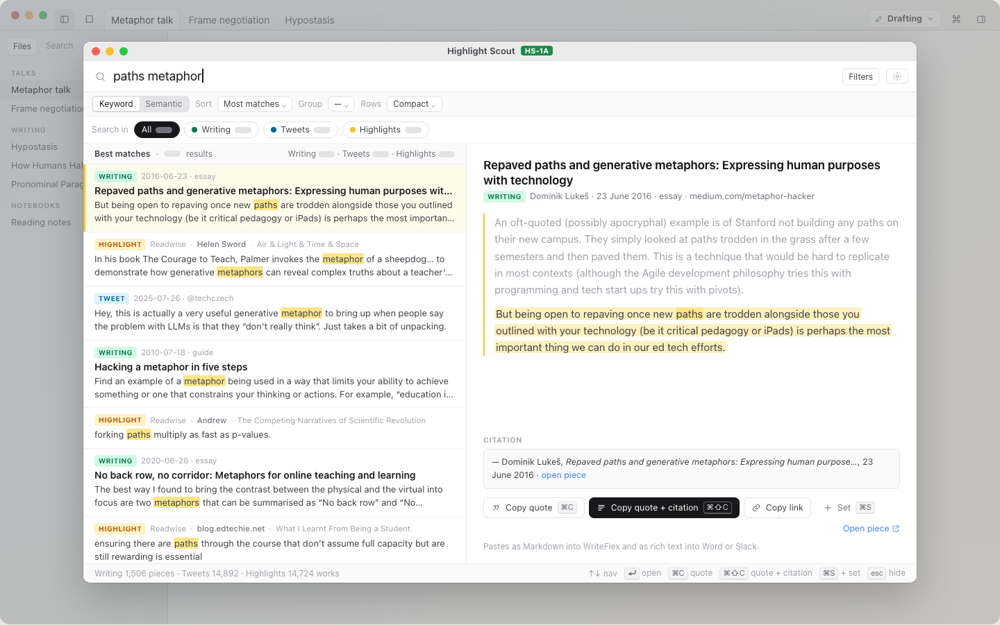
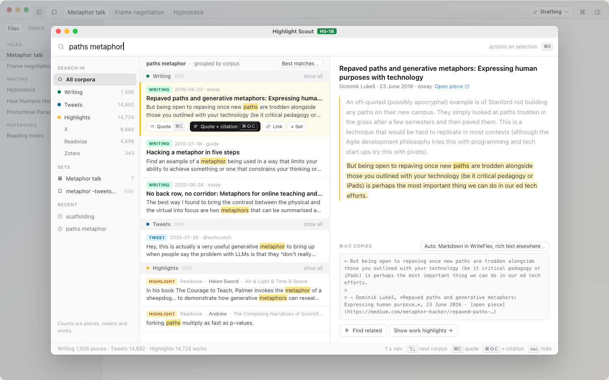
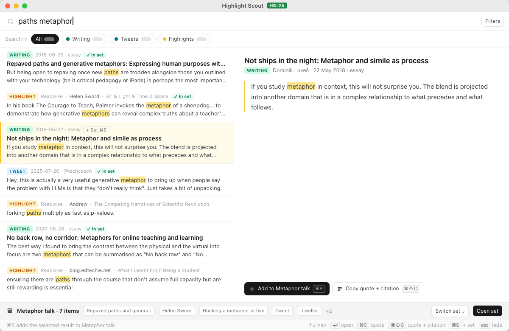
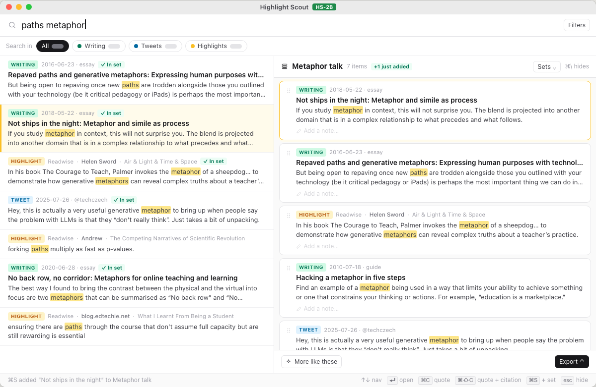
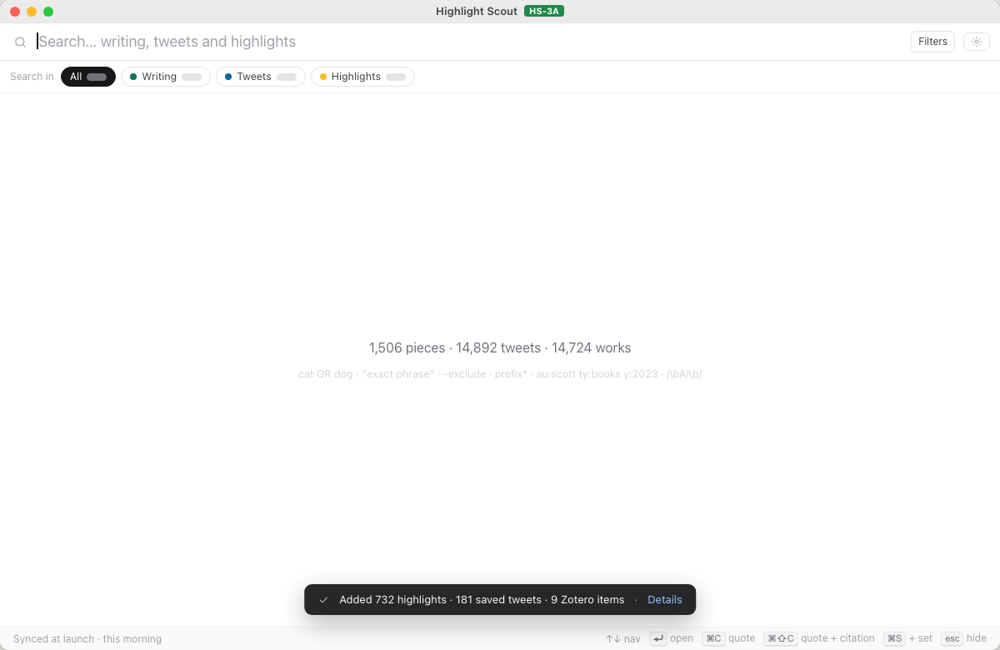
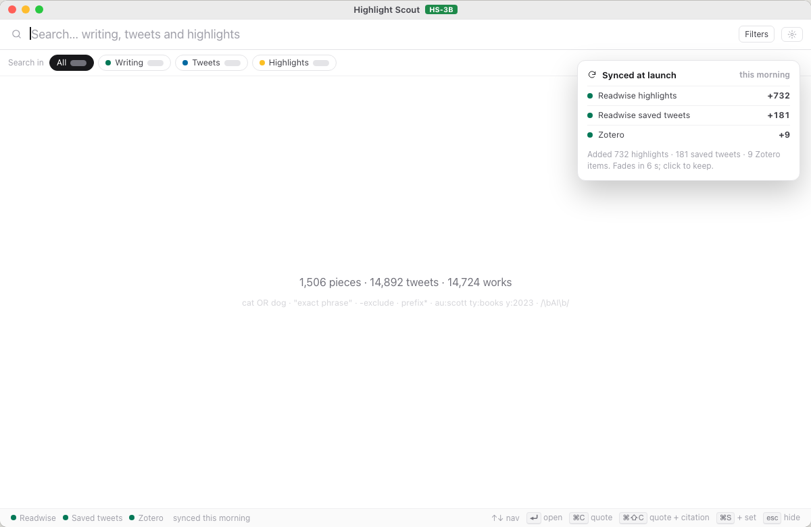
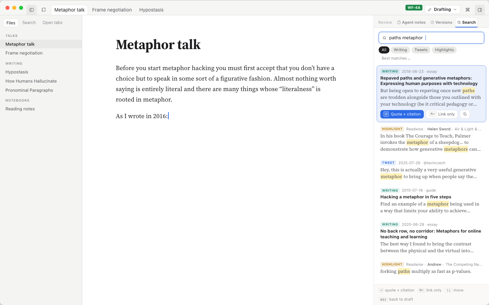
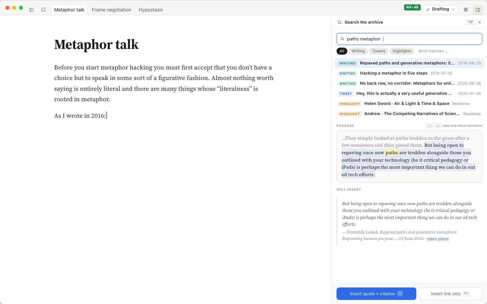
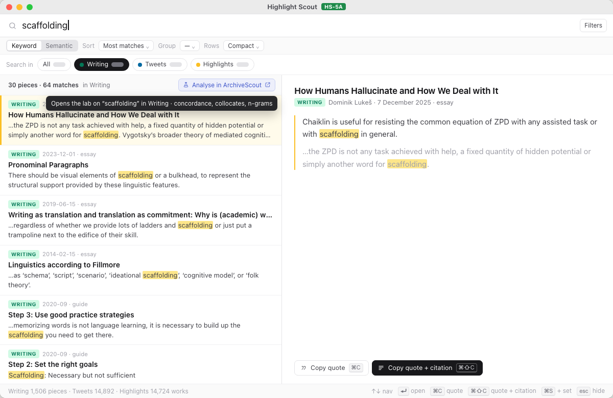
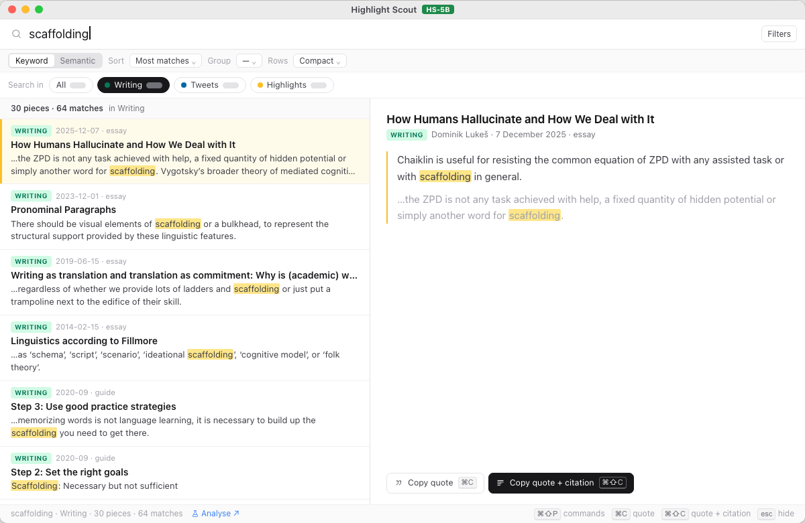

HS-1A
The finder you know, with a corpus row
Today’s layout kept whole; corpus chips replace the colour row, source badge first, copy actions at the foot of the reading pane with ⌘⇧C as the dark button.
Five surfaces, two directions each. Highlight Scout is drawn at its real window (1200 × 780), WriteFlex at 1440 × 900, ArchiveScout at 1280 × 820. Every title, quote, tweet and count is real; grey pills stand for numbers not known yet. Each card shows the first state of a direction; the page holds every state and its open questions. Pick one direction per surface, or mix parts.

Today’s layout kept whole; corpus chips replace the colour row, source badge first, copy actions at the foot of the reading pane with ⌘⇧C as the dark button.

A quiet left rail of corpora with real sizes, sets and recent searches; results grouped Writing / Tweets / Highlights; copy actions ride on the selected row and the pane previews the clipboard.

Tray names “Metaphor talk · 7 items”; the set page is 70% ordered items with notes, 30% export; saved searches and agent suggestions reuse the page.

A drawer beside the results for collecting, reordering, notes and an Export menu; suggestions are reviewed one at a time on their own screen.

Today’s mechanism finished: bottom toast with per-source counts, red failure line above the status bar, Settings → Sync as a table.

Per-source lights always visible; a summary card at top right; the red line under the search box; Settings as one card per source with history.

Search joins the 340 px right pane; cards in WriteFlex type; ⏎ quote + citation, ⌘⏎ link; the pane stays open for the next quote.

A 460 px dock with a scan list, the passage in context and the exact block to be inserted; closes after the insert.

“Analyse in ArchiveScout ↗” in the lab’s blue on the count line it carries across (30 pieces · 64 matches).

A small “Analyse ↗” beside the count in the status bar and palette commands that open the lab on Concordance, Collocates or N-grams.